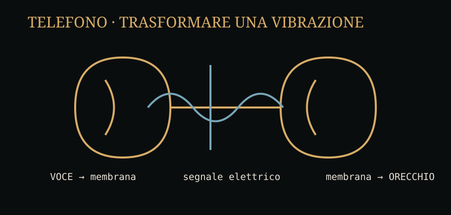

Il problema cambia. Non basta più dire «A». Non basta più distinguere un punto da una linea. Chi parla vuole essere ascoltato come voce: con la sua intensità, le sue pause, le sue inflessioni.
Alexander Graham Bell arriva a questo problema partendo anche da un interesse profondo per la fisiologia della voce e dell'udito. La Library of Congress documenta i suoi esperimenti sull'acustica, sul funzionamento dell'orecchio e sulla possibilità di rappresentare visivamente le vibrazioni sonore. Nel 1874, secondo la timeline delle sue carte, Bell concepisce l'idea del telefono. citeturn0search5
La domanda nascosta dentro una parola
«Telefono» significa, in sostanza, voce a distanza. Ma per ottenere una voce a distanza bisogna fare qualcosa di sorprendente: spezzare la catena naturale della voce e ricostruirla altrove.
Quando parliamo, le corde vocali e il tratto vocale producono variazioni di pressione. L'aria vibra. Il timpano dell'ascoltatore vibra. Il cervello interpreta quelle vibrazioni come parole.
Il telefono cerca di inserire una macchina in mezzo:
La cosa straordinaria è che il segnale non deve essere una registrazione digitale della voce. Nei primi sistemi telefonici è una variazione elettrica analoga all'andamento della vibrazione sonora: per questo parliamo di segnale analogico.

Guardiamo dentro il telefono
Nel disegno originale di Bell conservato dalla Library of Congress si vede già l'idea fondamentale: una persona parla davanti a una membrana; la membrana vibra; un'armatura collegata a un elettromagnete produce variazioni elettriche; dall'altra parte un secondo elettromagnete fa muovere un'altra membrana. Il disegno è quasi una radiografia dell'idea. citeturn0search13
La voce non viaggia
Attraversa il filo una rappresentazione della voce.
Questa distinzione è uno dei ponti più importanti verso l'informatica. Una fotografia digitale non è un rettangolo che attraversa un cavo. È una rappresentazione numerica. Un video non è una scena che corre dentro la fibra. È una sequenza di dati. Un messaggio non è una frase che si sposta nello spazio: è una codifica che un sistema può trasmettere e ricostruire.
Il telefono diventa una rete
Un telefono può essere collegato direttamente a un altro. Ma una città con migliaia di telefoni non può avere un filo dedicato tra ogni coppia. Il numero dei collegamenti crescerebbe troppo.
Serve una macchina intermedia che riceva la richiesta e stabilisca quale collegamento utilizzare. Nasce così una rete di centrali e linee. La telefonata non è più soltanto un apparecchio: è una sequenza di decisioni distribuite su un'infrastruttura.
La rete deve stabilire quale percorso utilizzare per mettere in comunicazione due estremità e, nella commutazione di circuito tradizionale, mantenere quel percorso disponibile durante la conversazione.
Due idee che sembrano opposte
Commutazione di circuito
Prima si stabilisce un percorso. Durante la telefonata quel percorso viene mantenuto per la comunicazione.
Commutazione di pacchetto
Il messaggio viene diviso in unità che possono essere inoltrate attraverso percorsi differenti e ricomposte alla destinazione.
Quando più avanti incontreremo Baran, Davies e ARPANET, scopriremo che il problema della rete di computer è anche una reazione ai limiti di un modello di comunicazione più rigido.
10 marzo 1876
Il 7 marzo 1876 viene concesso a Bell il brevetto statunitense 174,465. Tre giorni dopo, il 10 marzo, Bell registra nel suo quaderno l'esperimento riuscito con Thomas Watson: una frase pronunciata attraverso il dispositivo viene udita dall'altra parte. La Library of Congress conserva la documentazione di quel momento. citeturn0search0turn0search11
La frase è diventata celebre, ma il dettaglio più importante non è la frase. È il fatto che per la prima volta una voce umana intelligibile può essere trasferita attraverso un apparato elettrico e ricostruita a distanza.
Da qui nasce un nuovo tipo di vulnerabilità
Una volta costruita una rete telefonica, bisogna farle capire molte cose: chiamata, risposta, linea libera, linea occupata, instradamento, fine della conversazione. Per farlo vengono utilizzati segnali di controllo.
E qui compare una lezione che interessa direttamente la sicurezza: se il canale che trasporta la voce trasporta anche segnali che controllano la rete, il confine tra «contenuto» e «comando» può diventare pericolosamente sottile.
Fonti storiche
Library of Congress · Bell timeline · Bell's telephone design sketch.